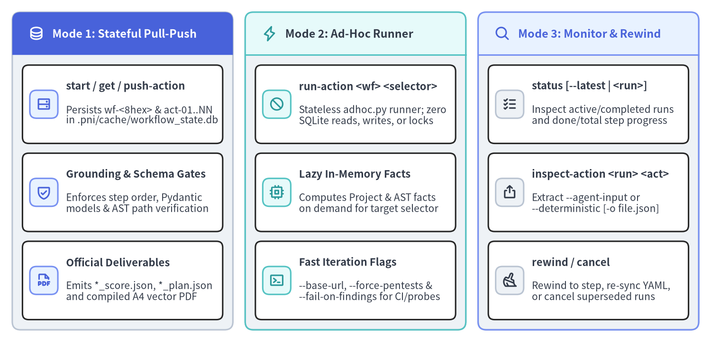
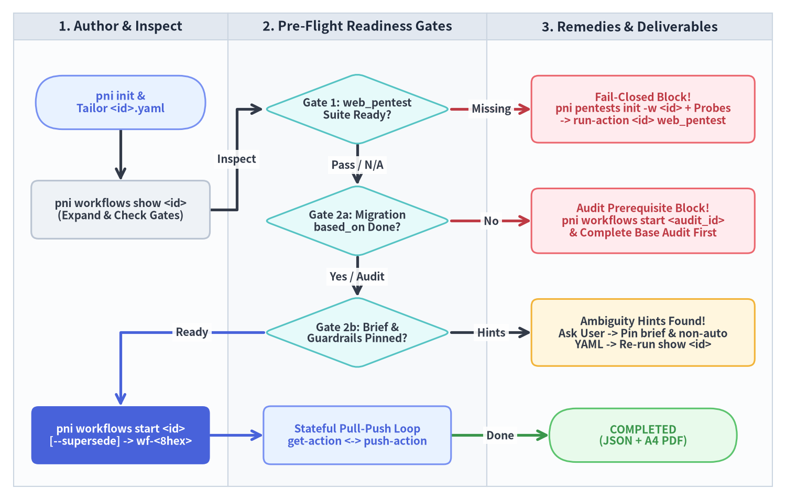

ワークフローと Pre-Flight ゲート
信頼性の高いソフトウェア健全性監査、ライブペネトレーションテスト、および段階的モダナイゼーション計画を実行するには、実行状態を SQLite に固定する前に決定論的な事前検証が不可欠です。pni501 はこのライフサイクルを pni workflows に統合し、Python、Java、PHP、Go、TypeScript、JavaScript の全 6 言語リポジトリに対して 3 つの動作モード、フェイルクローズドな Pre-Flight 準備ゲート、および 宣言的 YAML ターゲット継承と複合ステップ展開を提供します。

Source Code
from drawlib.canvas import save, setup
from drawlib.icons import phosphor
from drawlib.smartarts import CardList, Panel
from drawlib.styles import Styles
setup(width=174, height=84, dpi=150)
p1 = Panel(
"Mode 1: Stateful Pull-Push",
header_variant="filled",
header_height=10.5,
style=Styles.Neutral.patch(shape_r=2.0),
header_style=Styles.PrimaryFlat,
text_style=Styles.WhiteBold.patch(text_size=11.2),
icon=phosphor.database,
icon_style=Styles.WhiteBold,
)
p1.draw(xy=(3.0, 3.0), width=54.0, height=78.0)
ix1, iw1, ih1 = p1.get_content_box(xy=(3.0, 3.0), width=54.0, height=78.0, padding=(2.5, 2.5))
c1 = CardList(
style=Styles.WhiteBordered.patch(shape_r=1.5),
text_style=Styles.DarkBold.patch(text_size=10.5),
description_style=Styles.Dark.patch(text_size=10.0),
badge_shape="rounded_rect",
badge_style=Styles.PrimaryNeutral,
badge_text_style=Styles.PrimaryBold.patch(text_size=10.0),
icon_style=Styles.PrimaryBold,
direction="vertical",
spacing=2.4,
)
c1.add("start / get / push-action", "Persists wf-<8hex> & act-01..NN\nin .pni/cache/workflow_state.db", icon=phosphor.hard_drives)
c1.add("Grounding & Schema Gates", "Enforces step order, Pydantic\nmodels & AST path verification", icon=phosphor.shield_check)
c1.add("Official Deliverables", "Emits *_score.json, *_plan.json\nand compiled A4 vector PDF", icon=phosphor.file_pdf)
c1.draw(xy=ix1, width=iw1, height=ih1)
p2 = Panel(
"Mode 2: Ad-Hoc Runner",
header_variant="filled",
header_height=10.5,
style=Styles.Neutral.patch(shape_r=2.0),
header_style=Styles.SecondaryNeutral,
text_style=Styles.DarkBold.patch(text_size=11.2),
icon=phosphor.lightning,
icon_style=Styles.SecondaryBold,
)
p2.draw(xy=(60.0, 3.0), width=54.0, height=78.0)
ix2, iw2, ih2 = p2.get_content_box(xy=(60.0, 3.0), width=54.0, height=78.0, padding=(2.5, 2.5))
c2 = CardList(
style=Styles.WhiteBordered.patch(shape_r=1.5),
text_style=Styles.DarkBold.patch(text_size=10.5),
description_style=Styles.Dark.patch(text_size=10.0),
badge_shape="rounded_rect",
badge_style=Styles.SecondaryNeutral,
badge_text_style=Styles.DarkBold.patch(text_size=10.0),
icon_style=Styles.SecondaryBold,
direction="vertical",
spacing=2.4,
)
c2.add("run-action <wf> <selector>", "Stateless adhoc.py runner; zero\nSQLite reads, writes, or locks", icon=phosphor.prohibit)
c2.add("Lazy In-Memory Facts", "Computes Project & AST facts\non demand for target selector", icon=phosphor.cpu)
c2.add("Fast Iteration Flags", "--base-url, --force-pentests &\n--fail-on-findings for CI/probes", icon=phosphor.terminal_window)
c2.draw(xy=ix2, width=iw2, height=ih2)
p3 = Panel(
"Mode 3: Monitor & Rewind",
header_variant="filled",
header_height=10.5,
style=Styles.Neutral.patch(shape_r=2.0),
header_style=Styles.PrimaryNeutral,
text_style=Styles.PrimaryBold.patch(text_size=11.2),
icon=phosphor.magnifying_glass,
icon_style=Styles.PrimaryBold,
)
p3.draw(xy=(117.0, 3.0), width=54.0, height=78.0)
ix3, iw3, ih3 = p3.get_content_box(xy=(117.0, 3.0), width=54.0, height=78.0, padding=(2.5, 2.5))
c3 = CardList(
style=Styles.WhiteBordered.patch(shape_r=1.5),
text_style=Styles.DarkBold.patch(text_size=10.5),
description_style=Styles.Dark.patch(text_size=10.0),
badge_shape="rounded_rect",
badge_style=Styles.Neutral,
badge_text_style=Styles.DarkBold.patch(text_size=10.0),
icon_style=Styles.DarkBold,
direction="vertical",
spacing=2.4,
)
c3.add("status [--latest | <run>]", "Inspect active/completed runs\nand done/total step progress", icon=phosphor.list_checks)
c3.add("inspect-action <run> <act>", "Extract --agent-input or\n--deterministic [-o file.json]", icon=phosphor.export)
c3.add("rewind / cancel", "Rewind to step, re-sync YAML,\nor cancel superseded runs", icon=phosphor.broom)
c3.draw(xy=ix3, width=iw3, height=ih3)
save()
1. pni workflows の 3 つの動作モード
エンドツーエンドの公式評価、単一ステップの高速な試行錯誤、および生の sqlite3 クエリを記述させない安全な状態参照・巻き戻しを両立するため、pni workflows は 3 つの動作モードを備えています。
| モード | サブコマンドと主要フラグ | workflow_state.db 操作 |
主なユースケース |
|---|---|---|---|
Mode 1: ステートフル Pull-Push (engine.py) |
start <wf> [--supersede]get-action <run_id>push-action <run_id> <act_id> [JSON | -f file.json] |
読取 / 書込 (wf-<8hex> と act-01..NN を生成し、出力と入力を永続化) |
公式リポジトリ監査、based_on 連携マイグレーション計画、スコア/計画 JSON 出力、A4 PDF レポート生成 |
Mode 2: ステートレス単発ランナー (adhoc.py) |
run-action <wf> <selector>[--base-url URL][--force-pentests][--fail-on-findings] |
なし (完全インメモリの WorkflowFactsBundle で動作) |
.pni/pentests/<target>/ の HTTP プローブ開発、.pni/dockerfiles/ の調整、単一ステップ検証、CI ゲーティング |
Mode 3: 監視・巻き戻し・クリーンアップ (inspector.py, state_db.py) |
status [run_or_wf] [--latest] [-w wf] [-s status]inspect-action <run_or_wf> <action> [--agent-input | --deterministic] [-o path]rewind <run_or_wf> <action> [--pull]cancel [<run_id> | --superseded] |
読取 (status, inspect-action) / 状態更新 (rewind, cancel) |
done/total 進捗確認、記録済み JSON ペイロードの抽出、指定ステップへの巻き戻し再実行、古いセッションの整理 |
1.1 run-action におけるステートレス遅延評価
オペレーターやエージェントが pni workflows run-action <workflow_id> <selector> を実行すると、run_workflow_action_adhoc() は SQLite 実行レコードを作成せず、ワークフロー全体の based_on 前提条件も強制せずに .pni/workflows/<workflow_id>.yaml を正規化して実行します。
- 前提ファクトのオンデマンド合成: 対象プリミティブが上流メタデータを必要とする場合（例:
web_pentestやmigration_analyzeがProjectFactsとAstFactsを必要とする場合や、run_check/security_scanがProjectFactsを必要とする場合）、ランナーはそれらをメモリ上で自動計算し、補助出力を抑制して対象ステップの結果のみを表示します。 - ペアとなる AI 推論ガイドの同時プレビュー:
<selector>が複合uses:ステップ（repo_structure_auditやweb_penetration_auditなど）に一致する場合、決定論的プリミティブの実行結果に加えて、ペアとなるai_interpretのチェックリスト・適用ルール・入力 JSON Schema を一括出力します。 - 終了コードによる CI ゲーティング: 実行エラーやコンテナ起動失敗（
status in {"error", "timeout"}）は常に終了コード1を返します。さらに--fail-on-findingsを指定すると、単体テスト失敗・Trivy 脆弱性/設定不備/シークレット検出・ペネトレーションテスト指摘が 1 件でも存在する場合に終了コード1で終了します。
1.2 6 言語共通の 6 つの標準ワークフローパターン
Python、Java、PHP、Go、TypeScript、JavaScript の全 6 言語において、pni init はスターター .pni/workflows/*.yaml（full_audit および quick_check）を生成し、用途に応じて以下の 6 つの標準ワークフローパターンを構成できます。
| ワークフローパターン | カテゴリ | 含まれる複合アクションステージ | 主な成果物 |
|---|---|---|---|
full_audit |
audit |
architecture_analysis + <lang> 構造/AST/テスト + アーキタイプ監査 + container_runtime_audit + security_vulnerability_audit (+ web_penetration_audit) + emit_score + write_drawlib_report |
reports/<target>_score.json + 7章構成 A4 PDF (reports/<target>.pdf) |
quick_check / scoring |
audit |
高速な静的 <lang> 構造/AST/テスト監査 + emit_score (コンテナ/Trivy/PDF ステップを省略) |
reports/<target>_score.json |
security_audit |
audit |
repo_structure_audit + <lang>_ast_audit + supply_chain_audit + security_vulnerability_audit + emit_score |
セキュリティ・サプライチェーン特化 *_score.json |
pentest |
audit |
<lang>_ast_audit (ルート抽出) + web_penetration_audit (127.0.0.1 ループバックコンテナ + httpx プローブ) + emit_score |
.pni/cache/<wf>/pentest/pentest_facts.json + *_score.json |
migration_plan |
migration |
based_on: <audit_id> 必須。migration_proposal (migration_analyze + ai_interpret + emit_migration_plan) + write_migration_report |
reports/<target>_migration_plan.json + マイグレーション A4 PDF |
report |
audit / migration |
write_drawlib_report または write_migration_report の単体実行 (または pni workflows rewind <wf> create_report --pull) |
更新された reports_src/<target>_src/ + コンパイル済み reports/<target>.pdf |
2. フェイルクローズド Pre-Flight 準備ワークフロー
pni workflows start <id> は解決済みのディレクトリターゲット、アクションパラメータ、およびルールバインディングを .pni/cache/workflow_state.db に固定するため、.pni/workflows/<id>.yaml がすべての実行における Single Source of Truth (SSOT) となります。ステートフルセッションを開始する前に、オペレーターと AI エージェントは pni workflows show <id> と start_workflow_run() によって強制される 4 段階の準備シーケンスを実行します。

Source Code
from drawlib.canvas import save, setup
from drawlib.diagrams.flow import Decision, End, FlowDiagram, Process, Start
from drawlib.styles import Styles
setup(width=176, height=112, dpi=150)
flow = FlowDiagram(
node_style=Styles.WhiteBordered.patch(
text_color=Styles.Dark.text_color, shape_r=1.6, text_size=10.0
),
edge_style=Styles.DarkBold,
edge_text_style=Styles.DarkBold.patch(text_size=10.0),
width=170.0,
height=106.0,
)
flow.add_lane("1. Author & Inspect", width=48.0)
flow.add_lane("2. Pre-Flight Readiness Gates", width=58.0)
flow.add_lane("3. Remedies & Deliverables", width=64.0)
n_init = flow.add(
Start(
"pni init &\nTailor <id>.yaml",
width=38.0,
height=12.0,
style=Styles.PrimaryNeutral.patch(shape_r=6.0),
text_style=Styles.PrimaryBold.patch(text_size=10.2),
),
xy=(24.0, 86.0),
)
n_show = flow.add(
Process(
"pni workflows show <id>\n(Expand & Check Gates)",
width=40.0,
height=13.0,
style=Styles.Neutral.patch(shape_r=1.6),
text_style=Styles.DarkBold.patch(text_size=10.0),
),
xy=(24.0, 62.0),
)
g_pentest = flow.add(
Decision(
"Gate 1: web_pentest\nSuite Ready?",
width=42.0,
height=16.0,
style=Styles.SecondaryNeutral,
text_style=Styles.DarkBold.patch(text_size=10.0),
),
xy=(77.0, 84.5),
)
r_pentest = flow.add(
Process(
"Fail-Closed Block!\npni pentests init -w <id> + Probes\n-> run-action <id> web_pentest",
width=50.0,
height=15.0,
style=Styles.DangerNeutral.patch(shape_r=1.6),
text_style=Styles.DangerBold.patch(text_size=10.0),
),
xy=(141.0, 84.5),
)
g_based = flow.add(
Decision(
"Gate 2a: Migration\nbased_on Done?",
width=42.0,
height=16.0,
style=Styles.SecondaryNeutral,
text_style=Styles.DarkBold.patch(text_size=10.0),
),
xy=(77.0, 59.5),
)
r_based = flow.add(
Process(
"Audit Prerequisite Block!\npni workflows start <audit_id>\n& Complete Base Audit First",
width=50.0,
height=14.5,
style=Styles.DangerNeutral.patch(shape_r=1.6),
text_style=Styles.DangerBold.patch(text_size=10.0),
),
xy=(141.0, 59.5),
)
g_brief = flow.add(
Decision(
"Gate 2b: Brief &\nGuardrails Pinned?",
width=42.0,
height=16.0,
style=Styles.SecondaryNeutral,
text_style=Styles.DarkBold.patch(text_size=10.0),
),
xy=(77.0, 34.5),
)
r_brief = flow.add(
Process(
"Ambiguity Hints Found!\nAsk User -> Pin brief & non-auto\nYAML -> Re-run show <id>",
width=50.0,
height=15.0,
style=Styles.WarningNeutral.patch(shape_r=1.6),
text_style=Styles.DarkBold.patch(text_size=10.0),
),
xy=(141.0, 34.5),
)
n_start = flow.add(
Process(
"pni workflows start <id>\n[--supersede] -> wf-<8hex>",
width=40.0,
height=13.0,
style=Styles.PrimaryFlat.patch(shape_r=1.6),
text_style=Styles.WhiteBold.patch(text_size=10.0),
),
xy=(24.0, 11.5),
)
n_loop = flow.add(
Process(
"Stateful Pull-Push Loop\nget-action <-> push-action",
width=42.0,
height=13.0,
style=Styles.PrimaryNeutral.patch(shape_r=1.6),
text_style=Styles.PrimaryBold.patch(text_size=10.0),
),
xy=(77.0, 11.5),
)
n_done = flow.add(
End(
"COMPLETED\n(JSON + A4 PDF)",
width=42.0,
height=12.0,
style=Styles.SuccessNeutral.patch(shape_r=6.0),
text_style=Styles.SuccessBold.patch(text_size=10.2),
),
xy=(141.0, 11.5),
)
n_init.connect(n_show, start_side="bottom", end_side="top")
n_show.connect(g_pentest, label="Inspect", start_side="right", end_side="left")
g_pentest.connect(r_pentest, label="Missing", start_side="right", end_side="left", style=Styles.DangerBold)
g_pentest.connect(g_based, label="Pass / N/A", start_side="bottom", end_side="top")
g_based.connect(r_based, label="No", start_side="right", end_side="left", style=Styles.DangerBold)
g_based.connect(g_brief, label="Yes / Audit", start_side="bottom", end_side="top")
g_brief.connect(r_brief, label="Hints", start_side="right", end_side="left")
g_brief.connect(n_start, label="Ready", start_side="left", end_side="top", style=Styles.PrimaryBold)
n_start.connect(n_loop, start_side="right", end_side="left", style=Styles.PrimaryBold)
n_loop.connect(n_done, label="Done", start_side="right", end_side="left", style=Styles.SuccessBold)
flow.draw(xy=(3.0, 3.0))
save()
2.1 Gate 1: フェイルクローズド Web ペネトレーションテスト検証 (web_pentest)
ワークフローの正規化ステップに web_pentest（通常は uses: web_penetration_audit 経由）が含まれ、かつ force_regenerate_pentests が false の場合、inspect_pentests_prerequisite() が .pni/pentests/<target>/ を事前検証します。
- フェイルクローズド制御:
.pni/pentests/<target>/にconftest.pyまたは 1 つ以上のtest_*.pyプローブファイルが存在しない場合、pni workflows show <id>は赤色のブロッキングパネルを表示し、pni workflows start <id>は即座にWorkflowPrerequisiteErrorを送出して、パイプライン途中での停止を防止します。 - 解消ループ:
pni pentests initでターゲット固有のPython + httpxスイートを生成し、AST で検出されたルートや認証ガードを確認して.pni/pentests/<target>/test_*.pyに HTTP セキュリティプローブを追加した上で、run-actionで単体検証してからステートフル実行を開始します。
# 1. .pni/pentests/<target>/ にベースライン + AST 検出ルートプローブを生成
pni pentests init -w <workflow_id>
# 2. .pni/pentests/<target>/test_*.py を実装し、Mode 2 でステートレス検証
pni workflows run-action <workflow_id> web_pentest
# 3. すべての Pre-Flight ゲートが通過したことを確認してから Mode 1 を開始
pni workflows show <workflow_id>
2.2 Gate 2: マイグレーション前提条件 (based_on) とガードレール精査
マイグレーションワークフロー（category: migration）は based_on: <audit_id> の宣言が必須です。
- Gate 2a — SQLite ベース監査ゲート (
based_on):showおよびstart実行時、inspect_base_audit_status()は.pni/cache/workflow_state.db内の<audit_id>の最新completed実行を検索します。<audit_id>が未実行またはin_progressの場合、startはエラーでブロックし、先に<audit_id>を完了させるよう指示します。 - Gate 2b — 実行前ブリーフとガードレール精査:
check_migration_preflight_hints()はMigrationOptionsと統合されたbrief/brief_fileテキストを検査し、仕様が曖昧な場合に構造化されたPreflightReadinessHint警告を表示します。
| ヒントコード | 発火条件 | workflows start 前に必要なオペレーター / エージェント対応 |
|---|---|---|
MISSING_BRIEF |
with.brief と with.brief_file の両方が空 |
As-Is 監査ファクトを照合し、ターゲットスタック・境界・互換性要件をユーザーに確認して YAML の with.brief: | に記述する |
BRIEF_TOO_TERSE |
解決されたブリーフが 40 文字未満 |
具体的なランタイム/フレームワークのバージョン、DB/Cache ミドルウェア、および明示的な Non-Goals を追記する |
VAGUE_BRIEF_TERMS |
"to latest", "TBD", "TODO", "undecided", "最新", "未定", "いい感じ" 等の曖昧な表現を含む |
固定されたターゲットバージョン（例: Java 21 LTS + Spring Boot 3.4, PHP 8.3 + Laravel 11, Go 1.23, Node 22 LTS）に置き換える |
UNPINNED_STRATEGY |
migration_strategy が "auto" のまま |
ロールアウト方式を確認し、"phased_pr", "strangler_fig", "rewrite" のいずれかに固定する |
UNPINNED_CODEMOD_TOOL |
codemod_tool が "auto" のまま |
ターゲットスタックに合わせて "openrewrite", "rector", "ruff", "gofmt", "jscodeshift", "manual_only" のいずれかに固定する |
3. ワークフロー YAML スキーマ、正規化、およびアクションセレクタ
ワークフロー定義は .pni/workflows/<id>.yaml に配置され、WorkflowDefinition に対して検証されます。ロードおよび正規化時（normalize_workflow_steps()）に、宣言的ステップは決定論的なパラメータ展開とステップ間出力伝搬を伴うフラットな PrimitiveStep シーケンスへ変換されます。
3.1 ターゲット継承、複合アクション展開、およびトークン補間
- カテゴリと
based_onの不変条件 (WorkflowDefinition):category: audit（デフォルト）はbased_onを宣言できません。category: migration（およびcategory: progress）は、上流ワークフロー YAML を参照するbased_on: <workflow_id>を必ず宣言します（自己参照や循環チェーンはWorkflowPrerequisiteErrorとなります）。_merge_inherited_targets()は、子ワークフロー側の明示的な上書きを保持しつつ、上流ワークフローからroot,source,tests,docs,excludeを自動継承します。
- 複合アクションの展開 (
expand_composite_action):uses: <composite_id>を宣言するステップは、3層カスケード（.pni/actions/> 組み込み<lang>/> 組み込みcommon/）を通じて<composite_id>.yamlを解決します。- 展開された各プリミティブには決定論的 ID
{step_id}__{idx}_{primitive_type}（例:repo_and_deps__1_project_inspectとrepo_and_deps__2_ai_interpret）、重複排除された統合rules、マージ済みwithパラメータ、およびsource_action = <composite_id>が付与されます。 action: <primitive_type>を直接宣言するステップは、id = step.idかつsource_action = Noneの単一PrimitiveStepに 1 対 1 で対応します。
- プレースホルダ補間と下流へのパス伝搬:
_finalize_primitive_params()はワークスペースのターゲットコンテキスト（workflow_id,workflow_category,target_root,source_targets,test_targets,doc_targets,facts_path）と標準デフォルト値（src_dir: "reports_src",output_dir: "reports",target: "{workflow_id}",score_path: "{output_dir}/{target}_score.json"）を注入し、全文字列パラメータ内の{workflow_id},{target},{output_dir},{src_dir}を展開します。_propagate_emitted_score()は、emit_scoreの解決済みscore_path（またはemit_migration_planのplan_path）を後続のwrite_drawlib_reportステップへ自動伝搬します。
3.2 例 A: フルサービス監査ワークフロー (category: audit)
id: order_api_audit
category: audit
name: Order API Health, Security & Penetration Audit
description: Static AST/supply-chain audit, 3-aspect architecture comprehension, container/Trivy checks, and live HTTP pentest.
targets:
root: "services/order_api"
source: ["order_app"]
tests: ["tests"]
docs: ["README.md"]
steps:
- id: arch_recording
uses: architecture_analysis
- id: repo_and_deps
uses: repo_structure_audit
- id: ast_and_quality
uses: python_ast_audit
- id: test_suite
uses: python_test_audit
- id: service_readiness
uses: service_readiness_audit
- id: runtime_verification
uses: container_runtime_audit
- id: security_audit
uses: security_vulnerability_audit
- id: web_pentest
uses: web_penetration_audit
- id: output_score
uses: emit_score
with:
output_dir: "reports/python"
target: "order_api"
- id: create_report
uses: write_drawlib_report
with:
src_dir: "reports_src/python"
output_dir: "reports/python"
target: "order_api"
lang: "en"
style: "google"
3.3 例 B: チェーン連携マイグレーションワークフロー (category: migration)
id: order_api_migration
category: migration
based_on: order_api_audit # Inherits targets & requires COMPLETED run in workflow_state.db
name: Phased Migration Plan - Legacy Flask Order API -> Python 3.12 + FastAPI
steps:
- id: migration_intelligence_and_plan
uses: migration_proposal
with:
output_dir: "reports/python"
target: "order_api_migration"
migration_strategy: "phased_pr" # Pinned (non-"auto"): phased_pr | strangler_fig | rewrite
api_compatibility: "strict" # Pinned: strict | versioned_v2 | flexible
bug_handling_policy: "ask_human" # Pinned: ask_human | preserve_behavior | fix_in_phase3
codemod_tool: "ruff" # Pinned: openrewrite | rector | ruff | manual_only
brief: |
Target Stack & Infrastructure (Confirmed):
- Runtime & Web: Python 3.12 + FastAPI + Pydantic v2 DTOs (replace Flask untyped request.json)
- Persistence & State: PostgreSQL 16 via SQLAlchemy 2.0 + Redis 7 TTL cache (eliminate module globals)
Architecture & Compatibility Guardrails:
- Clean Architecture rings (`domain` / `usecase` / `port` / `adapter`) with zero framework imports in `domain`.
- Strict external HTTP route and JSON key backward compatibility; isolate Hyrum's Law quirks in DEC-XX log.
Confirmed Non-Goals:
- Do not split into separate microservices during this migration.
- id: compile_migration_report
uses: write_migration_report
with:
src_dir: "reports_src/python"
output_dir: "reports/python"
target: "order_api_migration"
lang: "en"
style: "google"
3.4 アクションセレクタの優先順位ルール (run-action & inspect-action)
pni workflows run-action <wf> <selector> と pni workflows inspect-action <run_or_wf> <selector>（および pni workflows rewind <run_or_wf> <selector>）は、人間にも AI エージェントにも扱いやすい柔軟なセレクタを以下の厳密な優先順位で解決します。
| 優先度 | セレクタ形式 | 指定例 | run-action の一致対象 (PrimitiveStep) |
inspect-action / rewind の一致対象 (ActionRunRecord) |
|---|---|---|---|---|
| 1 | ステップ番号 / act-XX |
act-07 または 7 |
正規化 primitives の 1 始まりインデックス |
seq == 7（または action_id == "act-07"）に完全一致 |
| 2 | 展開後プリミティブ ID | web_pentest__1_web_pentest |
prim.id == selector に完全一致 |
SQLite 内では act-XX として保存（番号またはステップ名で照合） |
| 3 | ワークフローステップ ID | web_pentest または repo_and_deps |
__ より前の prim.id プレフィックスが selector に一致する全プリミティブ |
name または source_action が selector に一致するアクション |
| 4 | 複合 uses ID |
web_penetration_audit |
source_action（または / 以降の末尾）が selector に一致する全プリミティブ |
source_action（または末尾）が selector に一致する全記録アクション |
| 5 | プリミティブ種別 | ast_analyze または emit_score |
prim.type.value == selector に一致する全プリミティブ |
primitive_type.value == selector に一致する全記録アクション |
inspect-actionにおける複数ステップ絞り込み:web_penetration_auditのような複合セレクタが決定論的ステップ（act-15: web_pentest）と AI ステップ（act-16: ai_interpret）の両方に一致する場合、--deterministicを渡すとdeterministic_output_jsonを持つステップのみに自動絞り込みされ、--agent-inputを渡すとagent_input_jsonを持つステップのみに絞り込まれます。
続いて、15 アクションと 12 プリミティブ で複合 YAML ビルディングブロックが決定論的ステップと AI ステップへ展開される仕組みを確認するか、決定論的解析器とペネトレーションテスト および ステートフル Pull-Push エンジン を参照してください。